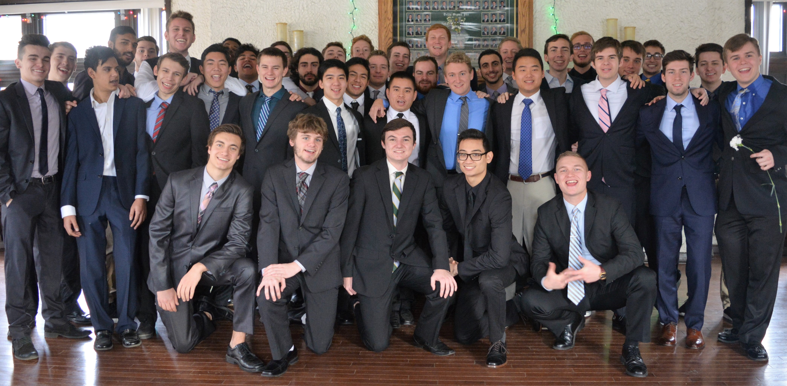

About Us
Delta Sigma Phi has always prided itself on being the atypical fraternity. Members and Fraternity leaders demonstrate the courage to dare, poise to take action and an unrelenting focus on excellence. This began with our founding.
By the late 1800s, several other fraternities already existed, but none awarded membership to both Christian and Jewish students. Much like the rest of the country, segregation was the norm; it was typical.
But on Dec. 10, 1899 by way of a secret meeting at City College of New York, Delta Sigma Phi was established as the first membership organization to initiate members from a variety of socioeconomic and ethnic backgrounds. Our Fraternity was founded on the principles of diversity and good character. Delta Sigma Phi incorporated with the purpose to spread “the principles of friendship and brotherhood among college men, without respect to race or creed.”
Today, our mission continues to embody that of our founding fathers, recognized as Meyer Boskey (an original founder from the Alpha Chapter at C.U.N.Y.) and Charles Tonsor (a recruit of Boskey’s at the Gamma Chapter at New York University), in all that we do today. Delta Sigma Phi has experienced solid growth across the continental United States, seen dramatic increases in Fraternity programming and constantly evaluates how to modernize the fraternity experience for men of high character.
Delta Sigma Phi founders built an atypical group during hostile times. Today, Delta Sig continues to link men of all backgrounds to spark a social movement. He aspires to be significant, communally engaged and atypical. He trumpets cooperation and collaboration with others